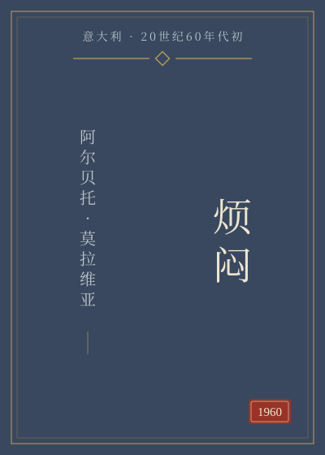
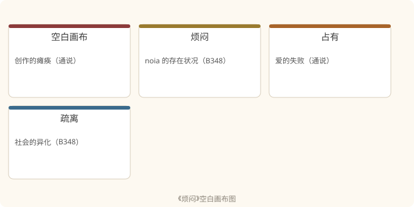

烦闷
一、基本信息
| 作者 | 阿尔贝托·莫拉维亚 |
|---|---|
| 成书/出版 | 1960年（Britannica B348：La noia (1960; The Empty Canvas)） Alberto Moravia — Encyclopaedia Britannica（百科全书） |
| 国别/地区 | 意大利 |
| 时代 | 现当代 · 20世纪60年代初 |
| 体裁 | 长篇小说 |
| 语言 | 意大利语 |

《烦闷》空白画布图（主题·结构图）
二、创作背景
Britannica（B348）：La noia——'a painter unable to find meaning either in love or work'（一个在爱与工作中都找不到意义的画家）。
Britannica（B348）：莫拉维亚——'known for his fictional portrayals of social alienation'。
题材（通说待核）：画家ino的'烦闷'——存在性无聊与占有式爱情。
三、内容脉络
（通说待核——B348未载剧情）画家的空白画布：创作与欲望的双重瘫痪。
（通说待核）与塞西莉亚的关系：占有的测试。
四、主要人物表
| 人物 | 身份 | 说明 |
|---|---|---|
| 画家（诺伊说） | 主人公 | （通说待核，B348未载） |
| 塞西莉亚 | 少女 | （通说待核，B348未载） |
五、主题与艺术特点
- 烦闷作为存在状况（B348：unable to find meaning）。
- 创作力的瘫痪（通说待核）。
- 占有的失败（通说待核）。
六、影响与评论
- Britannica：'a painter unable to find meaning either in love or work'（B348）。
Alberto Moravia — Encyclopaedia Britannica（百科全书） - Britannica：'social alienation'（B348 作者级定位）。
Alberto Moravia — Encyclopaedia Britannica（百科全书）
七、阅读建议
难点
- '烦闷'（noia）的哲学界定。
- 罗马艺术圈背景（通说待核）。
- 《烦闷》中译名（《冷漠的钟点》两说——通说待核）。
- 意大利文原版。
莫拉维亚后期首选。
八、待核实
- 主人公名核对（B348未载）。
- 1963年电影改编说待核。
- 中译名两说待核。